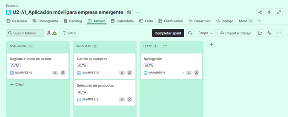
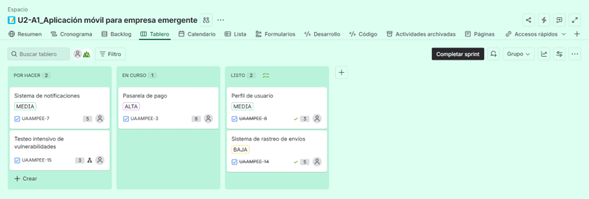
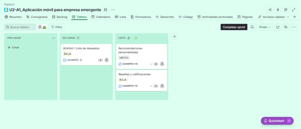

Actividades realizadas en el curso
El curso constó de foros de trabajo, actividades para conocer las metodologias agiles y sobre todo un proyecto de desarrollo haciendo uso de Jira como plataforma de gestión de actividades.
El proyecto principal se trabajo en 3 sprints que para mi caso constaron de lo siguiente:
- -Se desarrollo la pagina principal de la tienda en linea
- -Se desarrollo la pagina de perfil de usuario y pagina de pago
- -Se desarrollo la pagina de detalle de producto
Sistema implementado
Durante el curso aprendí y aplique metodologias agiles, sobre todo haciendo uso de Jira a continuación comparto el avance que se fue teniendo en los sprint
Primer Sprint:

Segundo Sprint:

Tercer Sprint:

Código fuente
A continuacion comparto el codigo fuente del proyecto principal del semestre como un comprimido .rar para su facil descarga.
Comercio-Electr-nico-UDG.rar
Incluye Paginas: Index, Pago, Pedidos, Producto y esta misma pagina.
Reporte de las modificaciones realizadas
A lo largo del proyecto hubo actividades que desembocaron en cambios para el proyecto como tras llevar a cabo "reuniones", y ya que se hizo uso de metodologias agiles se le denominan como "Historias".
Aquellas historias que se modificaron o añadieron fuera del inicio del proyecto fueron las siguientes:
- -Durante el segundo Sprint se añadio: "Testeo intensivo de vulnerabilidades"
- -Para las historias que corresponderian al cuarto Sprint se modifico la historia "Chat de soporte" y se dividio en "Chat de soporte_Operador" y "Chat de soporte_Chat Bot"